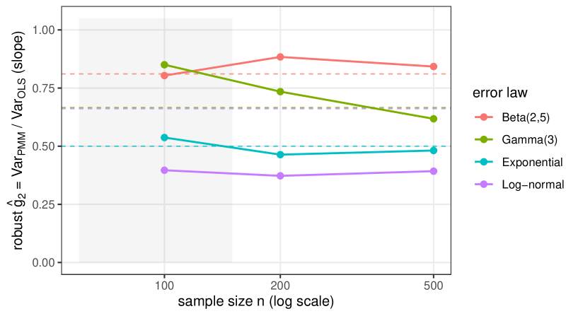
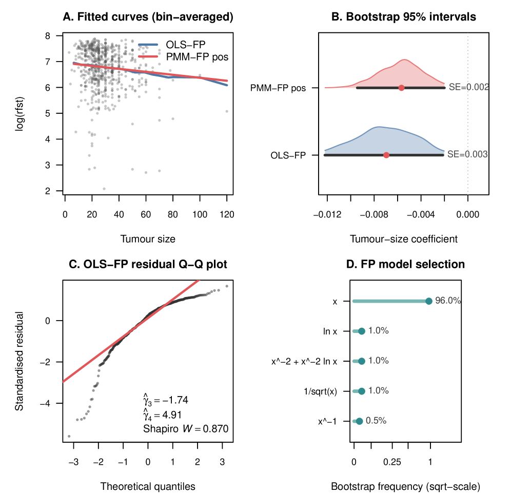

The estimator's core variance identity is machine-checked in Lean 4.
Abstract
Fractional polynomials (FP) are a standard tool for modelling nonlinear dose-response and covariate effects, implemented in the widely used mfp package. The conventional FP fit estimates its coefficients by ordinary least squares (OLS-FP), which is statistically inefficient when the regression errors are skewed or heavy-tailed, a common situation for survival times, concentrations and biomarkers. We present a drop-in replacement that keeps the identical FP model and design but estimates the coefficients with a moment-based score tuned to the residual skewness and kurtosis, giving a closed-form efficiency factor g2 = 1 - gamma3^2/(2+gamma4) relative to OLS-FP. Across skewed error laws the method reduces slope-coefficient variance by 10-20% for mildly skewed errors and up to roughly 60% for heavy-tailed log-normal errors, at realistic sample sizes, while keeping confidence-interval coverage close to nominal, and it reverts exactly to OLS-FP under symmetry, so it is never harmful when no gain is available. On the German Breast Cancer Study Group cohort it narrows the tumour-size confidence interval by 26% (bootstrap variance ratio 0.53 against the predicted 0.56), and a primary-biliary-cirrhosis cohort reproduces the gain. The estimator is closed-form, runs in milliseconds, and is released as a reproducible R package (pmm_fp in EstemPMM) with a one-command replication bundle; its core variance identity is machine-checked in Lean 4.
Problem
Fractional polynomials (FP) estimated by ordinary least squares are statistically inefficient when regression errors are skewed or heavy-tailed, a common situation in survival times, concentrations, and biomarkers.
Approach
The authors present a drop-in replacement that keeps the identical FP model but estimates coefficients using a moment-based score tuned to residual skewness and kurtosis, yielding a closed-form efficiency factor g2 = 1 - gamma3^2/(2+gamma4). The estimator reverts exactly to OLS-FP under symmetry. Its core variance identity is machine-checked in Lean 4.
Results
The method reduces slope-coefficient variance by 10-20% for mildly skewed errors and up to 60% for heavy-tailed log-normal errors. On the German Breast Cancer Study Group cohort it narrows the tumour-size confidence interval by 26% (bootstrap variance ratio 0.53 vs predicted 0.56). The estimator is released as an R package (pmm_fp in EstemPMM).

Figure 1: Robust slope-coefficient variance ratio \hat{g}_{2}=\widehat{\operatorname{Var}}(\hat{\beta}_{1}^{\mathrm{PMM}})/\widehat{\operatorname{Var}}(\hat{\beta}_{1}^{\mathrm{OLS}}) as a function of sample size, for each skewed error law. Dashed lines are the closed-form g_{2}=1-\gamma_{3}^{2}/(2+\gamma_{4}) ; the shaded band marks the small-sample region where cumulant estimates are noisy. Valu

Figure 2: GBSG real-data evidence. Panel A : bin-averaged partial dependence of fitted curves on tumour size for OLS-FP and PMM-FP pos at the selected linear model (PMM-FP full omitted because its small-sample conditioning is documented as unstable in § 4.4 ). Panel B : bootstrap 95 % percentile intervals for the tumour-size coefficient (fixed linear model, B=2000 ), with bootstrap SE annotated. P